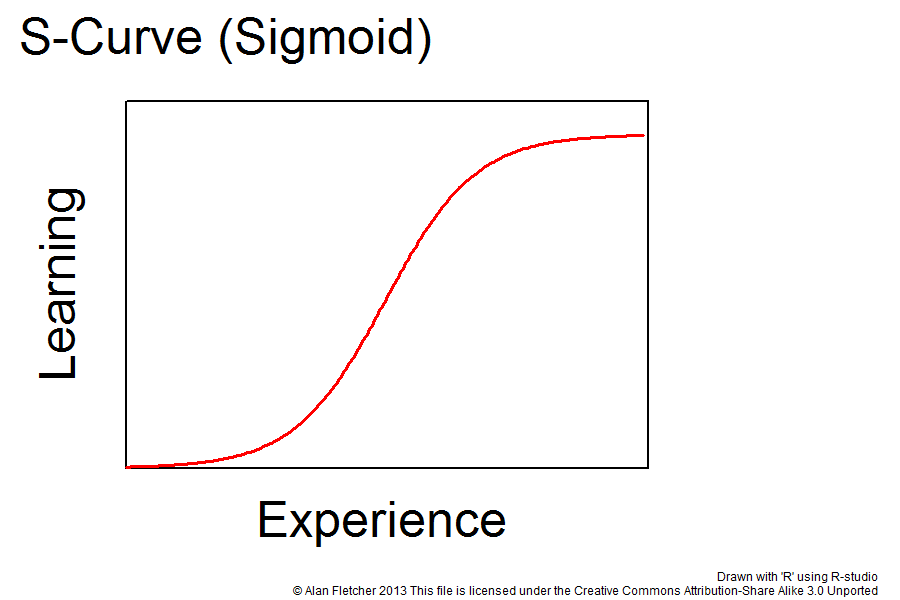

How to Level Up as a Developer @ NUS
By Beng / @ahbengish & Yang Shun / @yangshunz
Hi, I'm Beng
He's Yang Shun
We built NUSMods
(And some other things...)
Introduction
Outline
- Learning
- Modules for Learning Development
- Hackathons
- Open Source
Disclaimer
This talk is made up of our opinions and experiences.
Your results may vary.
No. 1 thing Google looks for?
Learning Ability
- Technology moves really rapidly
- Important to large companies
- Even more important to startups
- Eventually overtake those with more experience
Optimize for Learning (Not grades)
- Grades matter most before university
- University is a whole new ball game
- Choose what you want to learn
G.P.A.’s are worthless as a criteria for hiring, and test scores are worthless. ... We found that they don’t predict anything.Laszlo Bock, senior VP of people operations for Google
Optimizing for Learning
- Not optimizing for grades doesn't it's ok to get C's
- You'll naturally get decent grades
- How much learning value vs. time spent?
Don't take easy modules
just to pull your CAP up
- Challenging modules force you to learn
- Pick electives you find interesting, not easier
S-shaped Learning Curve
Key: Increase Learning Efficiency
- Learning accelerates over time
- Small efficiency gains have compounding effect
Multiple Monitors
- 10% - 50% boost in productivity
- Diminishing marginal returns after dual monitors
- Sweet spot: Two 24" monitors
Silence
- Very focused mental concentration needed, esp. coding
- Deep state of flow desired
- Give total silence a try
- Earplugs / noise-canceling headphones
Sleep & Exercise
- Often neglected, esp. with many deadlines looming
- Proven many times over to improve learning and memory
- Health benefits (of course)
Learning by Doing
How to get started?
Many modules in SoC are optional
Do modules because you want to, not because you have to
The Good Modules
The Origin of CS3216 and CS3217
- It all started with one man: Prof Ben Leong
- Allow students to work with the latest technology relevant to the industry
- Opportunity to work on their own ideas
CS3216 Software Development on Evolving Platforms
- About product creation and development, not just about coding
- Learn to deal with cutting edge and evolving technology
- Work in multidisciplinary teams
CS3216
- Lots of teamwork involved
- Chance to work with different talented people
- Multidisciplinary in nature (developers, designers, biz dev)
Course Structure
- 3 Assignments (Facebook App, App Seminar, Mobile Web)
- Blogging assignments
- Final Project (Any web-based application)
Why CS3216?
- Get to meet cool people
- Level up in web development. Fast
- Build something you are interested in
Notable Projects
Hush
- Anonymous social network
Una
- Library for building real-time multi-users interactive apps
GeeMeow / QuickVi
- Instant Hangout / Skype service
- Along with useful collaboration features
- No login nor download required
CS3217 Software Engineering on Modern Application Platforms
- Hardcore software engineering module
- Reason for the existence of PL1 (iMac lab)
- Each student is loaned an iPad for the course
Course Structure
- 5 Problem Sets (individual)
- Build a Puzzle Bobble game by the first half of the semester
- 1 Final Project (team)
- Build any iOS application of your wish
Why CS3217?
- Mobile is hot.
- More Facebook users are on mobile than desktops.
- Mobile developers are highly sought after.
Notable Projects
Tenza Yakitori
Notable Projects
Huntville
How to Survive CS3216 and CS3217
- Sleep less
- Make friends
- Learn fast
- Use libraries and frameworks. Do not reinvent the wheel
Personal Experience
- Very little handholding; thrown into the deep end of the pool
- Extremely fast way to level up
provided you don't die - You'll never die alone even if you do
Hackathons
Eat. Hack. Sleep. Repeat
What's a Hackathon?
- Form a team and code over 24 hours
- Free food for a weekend
- Cool swag!
What should I hack?
- Anything! But usually there's a theme
What kind of hacks win?
- Polished apps with well-communicated ideas.
- Networking involved.
- 8 kinds of projects you meet at a hackathon.
Winning Strategies
- Swiss-army knife team
- A front-end deve with design experience
- Using the right tools to accelerate development
- All about fluff and showmanship
Swiss Army Knife Team
- Diverse and multiple roles.
- Back-end guy
- Front-end guy (who can design)
- Guy who can pitch
- Pick up new skills fast.
Polish
- Recognize cheap ways to attain polish!
- Bootstrap is NOT sufficient. Use bootstrap themes
- People love things that move. Use animate.css
Showmanship
- Only 2-3 mins per presentation.
- Know what you want to demonstrate and rehearse the presentation flow well.
- Focus on the part that needs to be shown. Make sure those work!
Hard code the rest
Winning Hacks
SoundMesh
3rd in PennApps Fall 2013
Winning Hacks
Magellan
2nd Runner Up in Smart Port Hackathon 2014
Hackathon Experience
- Good way to learn a new library/framework
- Tiring but rewarding process
- Potentially complete your homework through a hackathon
Open Source Software (OSS)
- Observe and learn from real-world projects
- Empowers you to make an immediate impact on the world
- Even with limited resources as a student
- Collaborate and learn from more experienced people
Open Source @ NUS
- CP3101A Global Open Source Project (Facebook Open Academy)
- CP3106 Independent Project
- CP3108A/CP3108B Independent Work
- Google Summer of Code (GSoC)
Open Source (Most Of) Your Code
- GitHub is almost like a portfolio
- Push projects and significant homework to GitHub
- 5 private repositories free for students
Commit Logs from Last Night
Soloing: Starting your own OSS Project
- Put together everything you've been learning
- Don't worry if not polished
- You only see final product
Codename: CORSet
Early NUSMods Release
Please refresh if the page doesn't load
NUS-Related Projects
- Scratch your own itches
- Directly accessible community of users
- Help your fellow students
NUSMods.com
- 65K unique devices
- 2.1 million page views
- Most visible student-led OSS project
- Use that visibility to benefit the community
NUSModifications GitHub Organization
- Check it out here
- Link or host other NUS OSS projects
- Yang Shun integrated Corspedia
- Ashray integrated ModMaven
Getting Started
- Hang out on our HipChat development channel
- Look at open issues
- Chat and discuss with us
- Make a Pull Request (PR)
- Make first few PRs in a helpful environment
Keeping it Going: Write Code Every Day
- John Resig, jQuery creator has a great blog post about this
- Develop the habit of working on your side projects every single day